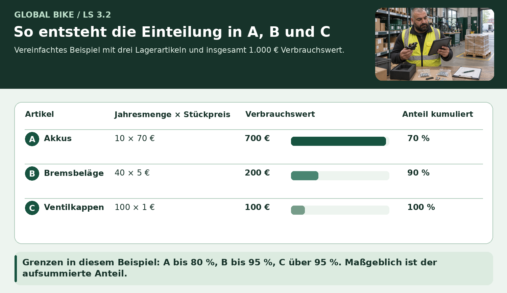

LS 3.2 · M3 · Global Bike
Excel-Arbeitsgrundlage zur ABC-Analyse
3.1 Tabellenaufbau
Legen Sie in Excel eine Tabelle mit folgenden Spalten an:
| Spalte | Inhalt |
|---|---|
| A | Materialnummer |
| B | Artikelbezeichnung |
| C | Jahresverbrauch |
| D | Stückpreis |
| E | Verbrauchswert |
| F | Anteil am Gesamtverbrauchswert |
| G | Kumulierte Prozentwerte |
| H | ABC-Klasse |
Die Excel-Arbeitsdatei ABC_Arbeitsdatei.xlsx enthält die fünf Übungsdatensätze aus M8. Die Artikel-IDs A bis E sind reine Übungskennungen. Die Tabelle nutzt die Zeilen 2 bis 6.
3.2 Formeln
Für die fünf Datensätze in den Zeilen 2 bis 6:
Verbrauchswert in E2
=C2*D2Gesamtverbrauchswert
=SUMME(E2:E6)Prozentualer Anteil in F2
=E2/SUMME($E$2:$E$6)Formatieren Sie die Spalte F als Prozentwert.
Sortieren Sie anschließend die gesamte Tabelle nach Spalte E absteigend. Achten Sie darauf, dass alle Spalten gemeinsam sortiert werden und die Datensätze vollständig zusammenbleiben.
Kumulierter Prozentwert in G2
=F2Kumulierter Prozentwert ab G3
=G2+F3Übernehmen Sie die Formel für die weiteren Zeilen. Die kumulierten Prozentwerte zeigen, wie viel Prozent des gesamten Verbrauchswertes bis zum jeweiligen Artikel erreicht sind.
3.3 ABC-Klasse
Verwenden Sie für jeden Artikel den kumulierten Endwert seiner Zeile. A reicht bis einschließlich 80 %, B über 80 % bis einschließlich 95 %, C über 95 %. Dokumentieren Sie, welche Grenzwerte verwendet wurden. Runden Sie erst für die Darstellung; für die kumulierte Berechnung sollten möglichst die ungerundeten Werte verwendet werden.
Arbeitsauftrag: Erstellen Sie eine vollständige, sortierte ABC-Auswertung. Prüfen Sie, ob der letzte kumulierte Prozentwert – abgesehen von Rundungsabweichungen – 100 % ergibt.
